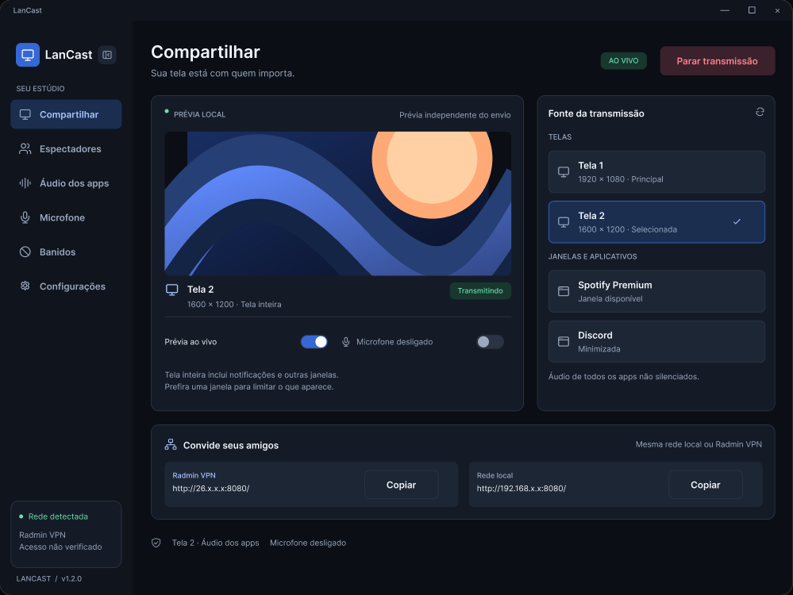

Vídeo fluido
Vídeo fluido
Transmita sua tela em até 60 FPS, com codificação por GPU e alternativas por software.
Compartilhamento de tela por LAN
Jogo, filme ou conversa em 60 FPS e baixa latência, por LAN ou VPN. Quem assiste só precisa de um link.
Windows 10 / 11 · Instalador ou portátil · Sem cadastro

Feito para estar junto
Conexão direta entre seu PC e seus amigos. Quem assiste só precisa de um link e um navegador.
Escolha o que transmitir, controle o som e reúna seus amigos.
O LanCast deixa o momento no centro.
Transmita sua tela em até 60 FPS, com codificação por GPU e alternativas por software.
Compartilhe o monitor inteiro ou escolha uma janela. Troque a fonte durante a sessão.
Seus amigos entram pelo Chrome ou Edge. Sem conta e sem instalar o LanCast.
Escolha quais apps entram na transmissão e deixe os outros sons só com você.
Inclua o microfone, escolha o dispositivo e ajuste o volume direto no aplicativo.
Proteja a sessão com senha, acompanhe os espectadores e bloqueie acessos por IP.
Da sua tela para os amigos em três passos. Escolha, compartilhe e aproveite o momento.
Abra o LanCast no Windows e escolha o que seus amigos vão acompanhar.
Inicie a transmissão e copie o endereço certo para o seu grupo.
Seus amigos abrem o link no navegador, escolhem um nome e entram na sessão.
FAQ
O essencial para sua primeira sessão.
Não encontrou a resposta que procurava?
Só quem transmite precisa instalar ou abrir a versão portátil no Windows. Seus amigos assistem pelo Chrome ou Edge.
Todos precisam estar na mesma rede virtual, criada por um programa de VPN. Para quem está na mesma rede local, basta usar o link de rede local.
Não. O LanCast também oferece codificação AMD, Intel e por software. O desempenho depende do computador e da rede.
Sim. Controle o áudio de cada aplicativo e inclua o microfone quando quiser. Ao compartilhar uma janela, você pode restringir o áudio ao app escolhido.
Use uma senha opcional, acompanhe a lista de espectadores e desconecte ou bloqueie acessos por IP.
Confira se todos estão na mesma rede local ou VPN e permita o LanCast no Firewall do Windows. A ajuda e o log estão nas configurações do aplicativo.
Chame os amigos
Baixe o LanCast. Compartilhe o link. Aproveitem juntos.
Windows 10 (2004+) / 11 · Também disponível em versão portátil